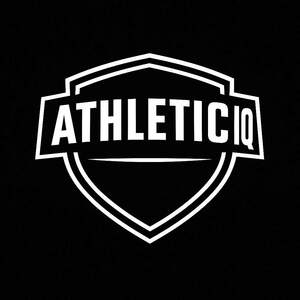

Trade Mark Journal No.2025/036 5 September 2025
UK00004219421 16 June 2025 (9,25,28,35,41)

- Class 9
- Training software; Simulation software [training]; Workout logging software; Electronic sports training simulators [computer hardware and software-based teaching apparatus]; Sports training simulators; Electronic sports training simulators; Training manuals in the form of a computer program; Education software; Computer software for assisting in the design of sports equipment; Software testing software; Software development programs; Health monitoring software; Computer software development tools; Downloadable mobile applications; Downloadable graphics for mobile phones; Downloadable applications for mobile devices; Downloadable applications for use with mobile devices; Downloadable software applications for mobile phones; Downloadable emoticons for mobile phones; Downloadable graphics for mobile telephones; Downloadable software in the nature of a mobile application; Downloadable emoticons for mobile telephones; Downloadable mobile applications for the management of data; Downloadable mobile applications for the transmission of information; Downloadable mobile applications for the transmission of data; Downloadable software in the nature of a mobile application for playing games; Smartphone software applications, downloadable; Downloadable mobile applications for use with wearable computer devices; Downloadable applications; Mobile software; Mobile apps; Application software for mobile phones; Electronic game software for mobile phones; Downloadable application software for smart phones; Downloadable smart phone applications (software); Downloadable electronic game software for wireless devices; Downloadable smart phone application software; Downloadable electronic games; Downloadable software; Mobile application software; Mobile app's; Downloadable application software; Application software for mobile devices; Downloadable e-books; Computer application software for mobile phones; Educational mobile applications; Software applications for mobile devices; Software and applications for mobile devices; Software applications for use with mobile devices; Downloadable wallpapers for computers and phones; Downloadable electronic game programs; Electronic publications, downloadable; Publications (Electronic -), downloadable; Downloadable electronic publications; Downloadable electronic newsletters; Downloadable video files; Downloadable videocasts; Computer software for mobile phones; Downloadable videos; Downloadable game software; Downloadable podcasts; Downloadable electronic reports; Displays for mobile phones; Computer game software for use on mobile and cellular phones; Downloadable video game software; Downloadable interactive entertainment software for playing video games; Downloadable digital photos; Computer software platforms, recorded or downloadable; Computer software applications, downloadable; Downloadable computer software applications; Digital books downloadable from the Internet; Software for mobile device management; Downloadable publications; Mobile data apparatus; Downloadable computer games; Downloadable virtual clothing; Computer game software for use on mobile devices.
- Class 25
- Sports [Boots for -]; Plus fours; Pants (Am.); Peaked caps; Pelerines; Pajamas (Am.); Sportswear; Knitwear [clothing]; Ready-to-wear clothing; Triathlon clothing; Clothing for sports; Sports clothing; Casualwear; Athletic clothing; Men's clothing; Sports garments; Jackets being sports clothing; Jerseys [clothing]; Athletic footwear; Clothing; Gymwear; Outerwear; Playsuits [clothing]; Menswear; Clothes for sports; Windproof clothing; Woolen clothing; Clothing for gymnastics; Gloves for apparel; Sports clothing [other than golf gloves]; Shorts [clothing]; Parts of clothing, footwear and headgear; Knitwear; Knitted clothing; Swimwear; Leisure footwear; Clothes for sport; Clothing for leisure wear; Jackets [clothing]; Leisure clothing; Men's underwear; Leisurewear; Jogging bottoms [clothing]; Waterproof clothing; Sweatshorts; Water-resistant clothing; Children's clothing; Golf clothing, other than gloves; Babies' pants [clothing]; Gloves [clothing]; Gloves as clothing; Moisture-wicking sports shirts; Clothing layettes; Garments for protecting clothing; Leather clothing; Clothing of leather; Women's clothing; Articles of sports clothing; Embroidered clothing; Quilted jackets [clothing]; Underwear (Anti-sweat -); Anti-sweat underwear; Beachwear; Babies' clothing; Linen clothing; Rainproof clothing; Casual clothing; Dance clothing; Sweat-absorbent underclothing [underwear]; Aprons [clothing]; Sports shirts; Clothing for wear in judo practices; Moisture-wicking sports pants; Weatherproof clothing; Jogging sets [clothing]; Rainwear; Woven clothing; Wind-jackets; Over-trousers; Children's outerclothing; Caps; Caps with visors; Caps [headwear]; Baseball caps; Knitted caps; Sports caps and hats; Bucket caps; Sports caps; Golf caps; Beanies; Beanie hats; Hats; Bobble hats; Baseball hats.
- Class 28
- Sports training apparatus.
- Class 35
- Sales promotions at point of purchase or sale, for others.
- Class 41
- Educating at senior high schools; Teaching at junior high schools; Teaching at elementary schools; Officiating at sports contests; Educating at universities or colleges; Educating at university or colleges; Tutoring at cram schools; Gym activity classes; Exercise classes; Arranging of classes; Conducting fitness classes; Conducting classes in nutrition; Conducting classes in weight reduction; Conducting classes in weight control; Providing courses of instruction at high school level; Conducting physical fitness conditioning classes; Providing courses of instruction at college level; Arranging and conducting of classes; Instruction in group exercise; Conducting distance learning instruction at the college level; Conducting distance learning instruction at the graduate level; School services; Production of course material distributed at professional lectures; Sports tuition, coaching and instruction; Production of course material distributed at vocational seminars; Education, teaching and training; Keep-fit instruction; Training courses; Fitness training services; Exercise [fitness] training services; Fitness and exercise training services; Personal trainer services [fitness training]; Physical fitness training services; Health and fitness training; Personal fitness training services; Consultancy relating to physical fitness training; Training in the development of software systems; Training services in the field of computer software development; Training services relating to fitness; Computer training; Training in the design of software systems; Computer training services; Physical fitness assessment services for training purposes; Training in the development of computer programs; Training services concerned with the use of computer software; Training courses relating to computer software; Training; Training relating to computer software; Training services relating to computer software; Training in the design of computer programs; Training in the operation of software systems; Aerobics training services; Health club services [health and fitness training]; Computer education training; Computer education training services; Training in the use of computers; Training in computer programming; Business training; Physical training services; Training in yoga; Conducting training sessions on physical fitness online; Training in the maintenance of computers; Training services; Training in electronics; Training in the operation of computer programs; Fitness and exercise instruction; Physical fitness education services; Instructional and training services; Exercise and fitness classes; Personal development training; Training courses relating to computer hardware; Training and further training consultancy; Sports training; Training in sports; Coaching [training]; Training consultancy; Health and wellness training; Training in business skills; Management training services; Organisation of computer related training courses; Training in business management; Business training services; Personal coaching [training]; Recreation and training services; Education and training consultancy; Educational and training services; Computer training advisory services; Exercise [fitness] advisory services; Training services relating to computer programs; Education and training; Physical fitness instruction; Provision of training courses in personal development; Training relating to computer hardware; Training and education services; Education and training services; Personal training services; Computer assisted training services; Educational and training programs in the field of risk management; Computer based training; Providing fitness and exercise facilities; Commercial training services; Training or education services in the field of life coaching; Training services for audio engineers; Teacher training services; Education and training in the field of business management; Practical training services; Training of personnel in food technology; Training services relating to computer systems; Life coaching (training); Computerised training; Instruction courses relating to physical fitness; Sports and fitness services; Provision of computer related training courses; Training related to nutrition; Golf fitness instruction; Personnel training; Sports education services; Educational and training services relating to sport; Vocational education and training services; Education, entertainment and sport services; Sporting education services; Education services relating to sports; Club education services; Sports coaching services; Academy services (Education -); Education academy services; Sports camp services; Sports instruction services; Education, entertainment and sports; Sport camp services; Providing sports training facilities; Educational services relating to sports; Physical education services; Arranging and conducting of youth soccer training programs; Educational and instruction services relating to sport; Coaching services for sporting activities; Arranging and conducting of youth American football training programs; Services of schools [education]; Education services relating to physical fitness; Training of sports players; Provision of training and education; Provision of education and training; Coaching in the field of sports; Educational services in the nature of coaching; Educational services for providing courses of education; Providing of training in the field of health care and nutrition; Sports club services; Sports entertainment services; Instruction services relating to sports; Consultancy services relating to the development of training courses; Online game services through mobile devices; Providing online videos, not downloadable.
Athletic IQ Group LTD